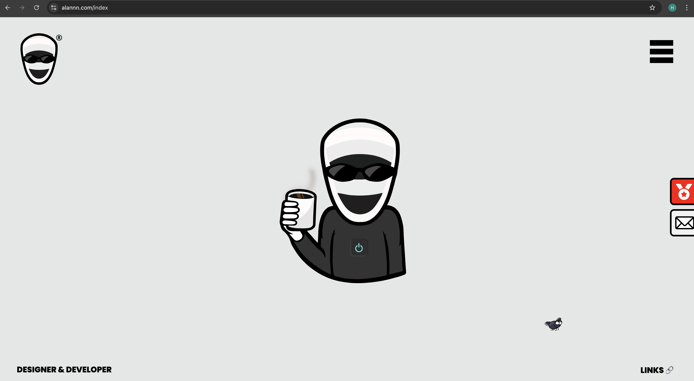
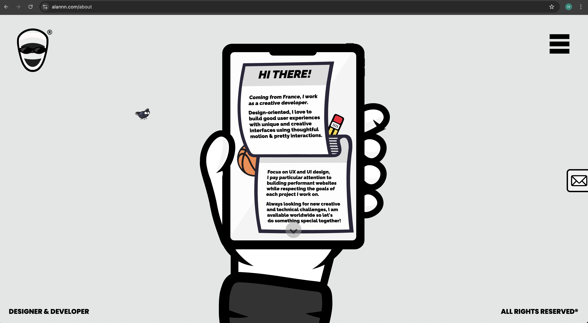
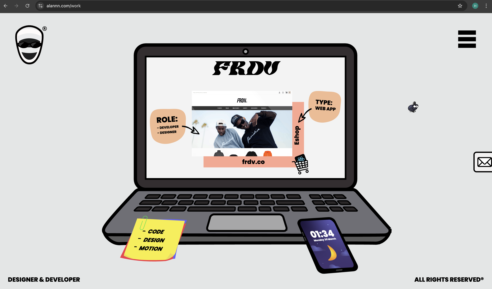
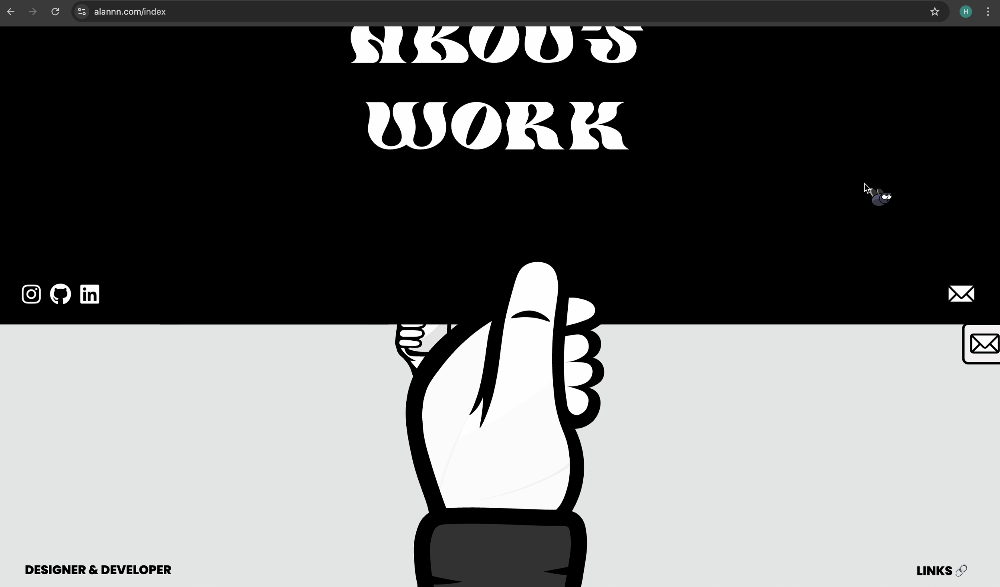

The first thing that caught my attention when interacting with the
experience was the character positioned in the centre of the screen. As
the rest of the page was largely blank, my focus was naturally drawn to
the most prominent visual element. The flickering ‘on’ button within the
character further emphasised this, clearly inviting interaction and
prompting me to click it.
During my interaction, I pressed the ‘on’ button on the central
character, scrolled down the page, and navigated to the about section
where I spent time reading through the content. I then returned to the
home page, scrolled again to access the work section, and clicked
through various projects. After returning to the home page once more, I
continued scrolling to the end and selected the links section, which
redirected me to a Linktree page.


The section I spent the most time engaging with was the about page, as
it contained the largest amount of written information and required more
attention to read through compared to other sections. The most common
action throughout the interaction was scrolling, which was used
consistently to navigate the experience. This included horizontal
movement across the homepage as well as vertical scrolling within
smaller, localised screens such as device graphics.
The primary goal of the interactive experience appears to be to showcase
the portfolio of the designer & developer Alannn, including his work,
skills, achievements, and external links. This goal is communicated
through a simple and minimalistic design that guides the user through
the content in a clear and structured way. Only essential information is
presented, supported by visuals that assist in understanding and
navigation.
My impression of the experience is that it suggests that it is intended to be interacted with briefly and not revisited frequently, as it feels designed for a short and focused viewing rather than extended engagement. This is reinforced by the limited amount of content, which can be easily viewed in a short period of time. Most people visiting the website would move through the interactive experience, and likely not revisit it upon completion. However users may revisit the website to find specific links, or check if any new work has been added to the portfolio.
The experience references a range of media forms, including 2D and 3D
design, as well as social media platforms such as TikTok, Instagram, and
YouTube, alongside other external websites.
The references to social media, design, and other websites suggest that
I should interact with the experience in an exploratory way. It
encourages me to click through sections, follow links, and actively
navigate the content rather than passively view it.
They also suggest that I should feel curious and engaged, as the clean
design and creative elements create a balance of professionalism and
playfulness, making the experience feel interesting and easy to interact
with.


One of the most frustrating aspects of the interaction is the slow
movement through the website due to the animated transitions. For
example, when I press on the menu in the top right corner to return
home, a hand appears from the bottom of the screen and pulls the menu
down. While this is quite cool, the novelty wears off after a bit and it
becomes slightly annoying having to wait for a slow animation just to
click a button.
In contrast, the most satisfying aspect of the interaction is the clean
and consistent colour scheme and style, which is complemented heavily by
the smooth animations which create a polished experience, even though
the pacing of some elements is slightly slow.